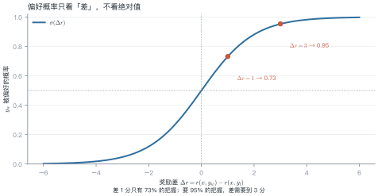
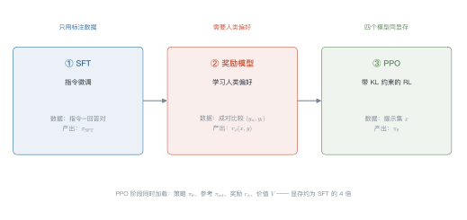
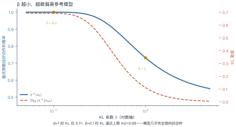
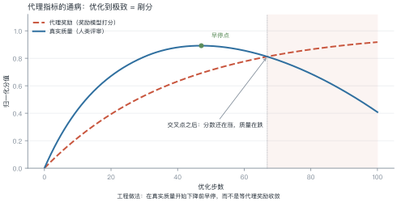
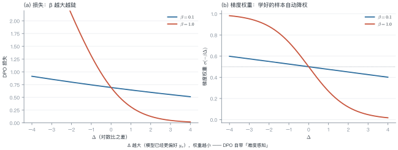

第 9 讲 偏好优化¶
本讲位置
第四部分的核心。前置：第 8 讲的指令微调（SFT）。本讲回答"模型已经会听话了，怎么让它说得更好"；第 21 讲会把同一套工具用到推理能力上。
📅 事实核查至 2026-11
本讲涉及的经典结论（Bradley-Terry 1952、InstructGPT 2022、DPO 2023）均已核对原文；2024 年后的方法变体见文末来源表。
学习目标¶
学完本讲，你应该能够：
- 写出 Bradley-Terry 模型与奖励模型的损失，并解释"偏好只依赖奖励差"这一性质；
- 从 KL 正则的 RL 目标推导出 DPO 的闭式解，说明它为什么等价于一个带权重的分类损失；
- 手算一个小例子的偏好概率、DPO 损失与梯度权重；
- 区分 RLHF / DPO / KTO / ORPO 的适用场景与代价。
0 直觉：你很难打绝对分，但很容易做比较¶
假设你要教一个人写技术文档。
让他给两篇文档打绝对分？很难。"这篇 82 分"——82 分的标准是什么？换个人、换一天，可能给 75 分。绝对分数既不稳定，也不可校准。
但如果给他两篇文档问"哪篇更好"？几乎人人能立刻回答，而且一致性很高。
这就是偏好优化（preference optimization）的出发点：用成对比较代替绝对打分。
由此引出本讲的三个主角：
| 角色 | 干什么 | 类比 |
|---|---|---|
| 奖励模型 \(r_\phi\) | 把"成对比较"压缩成一个标量分数 | 学会给作文打分的助教 |
| RLHF / PPO | 用这个分数去训练策略 | 助教打分，学生反复改 |
| DPO | 绕开助教，直接拿比较结果训练 | 不评分了，直接"这篇比那篇好" |
第三行是 2023 年之后的主流，因为它把"训练一个奖励模型 + 跑 RL"这两步合成了一步。
一句话总结
偏好优化 = 把"哪个更好"变成可微的损失。RLHF 用奖励模型做中介，DPO 则把它解析地消掉了。
1 形式化：偏好数据与隐含奖励¶
1.1 数据长什么样¶
一条偏好样本是三元组：
- \(x\)：提示（prompt）；
- \(y_w\)：被人类选中的回答（winner）；
- \(y_l\)：被拒绝的回答（loser）。
注意：数据里没有分数，只有"谁更好"。这是偏好学习与监督学习最根本的区别。
1.2 假设存在一个隐含奖励¶
我们假设人类的选择来自某个潜在的奖励函数 \(r^\star\)：人类更可能选奖励高的那个，但不是必然——人也会犯错、会有偏好波动。
于是问题变成：从成对比较里估计 \(r^\star\)，再用它改进策略。
1.3 Bradley-Terry 模型¶
1952 年 Bradley 和 Terry 提出的配对比较模型，假设
为什么只看差？ 因为偏好是相对的。若把 \(r\) 整体加上常数 \(c\)，差值不变，概率也不变。这意味着绝对分数不可辨识——你能学到的只有排序，不是刻度。

2 奖励模型：把比较压成一个分数¶
2.1 结构与损失¶
奖励模型通常就是"语言模型 + 一个标量头"：取最后一个 token 的隐状态，接一个线性层输出 \(r_\phi(x,y)\)。
训练目标是最大化人类选择的似然，即最小化负对数似然：
这就是一个二分类问题：把 \((y_w,y_l)\) 的分数差送进 sigmoid，标签恒为 1。
例 9.1 手算一次偏好概率¶
假设奖励模型给两条回答打了分：\(r(x,y_w)=2.0\)，\(r(x,y_l)=1.0\)。
第一步，算差：
第二步，过 sigmoid：
第三步，算损失：
换一组数对照：
| \(r_w\) | \(r_l\) | \(\Delta r\) | 偏好概率 | 损失 |
|---|---|---|---|---|
| 2.0 | 1.0 | 1.0 | 0.731 | 0.313 |
| 2.0 | 2.0 | 0.0 | 0.500 | 0.693 |
| 3.0 | 1.0 | 2.0 | 0.881 | 0.127 |
从这个例子里能读出三件事
- 打平手时损失是 \(\ln 2\approx0.693\)：模型完全没有偏好信息，这是二分类的"瞎猜基线"。
- 差 1 分只值 0.31 的损失下降：奖励模型需要把差距拉得更大才能显著降低损失，这直接导致后面的"分数通胀"。
- 绝对分数无关紧要：把两个分数同时加 10，表里所有数字不变。
2.2 奖励模型的三个通病¶
- 过拟合偏好数据：在训练集上能把差距拉到很大，换一批提示就失效；
- 长度偏置：人类偏好长回答，奖励模型学会了"长 = 好"，导致输出越来越啰嗦；
- 奖励黑客的入口：策略会找到奖励模型的漏洞，而不是真正变好（见 §3.4）。
3 RLHF：用奖励模型训练策略¶
3.1 三阶段流水线¶

3.2 目标函数¶
在 SFT 模型基础上继续优化，但加一道"别跑太远"的约束：
- 第一项：让奖励尽量高；
- 第二项：让新策略别离参考模型（通常是 SFT 模型）太远；
- \(\beta\)：两者的兑换率。
为什么必须有 KL 项？ 两个理由：
- 防奖励黑客：奖励模型只是人类偏好的近似，放任策略去最大化它，策略会找到"高分但没人喜欢"的怪句子；
- 防能力退化：没有约束的 RL 会把语言能力练废，输出变得重复、格式怪异。
3.3 闭式解：KL 约束下的最优策略¶
(9.3) 对每个提示可以单独求解。用拉格朗日乘子法（🔴 推导见下），最优策略有解析形式：
直觉：在参考策略的基础上，按奖励的指数重新加权。奖励高的回答被放大，奖励低的被压缩；\(\beta\) 控制放大倍数。
🔴 推导细节
把 (9.3) 写成逐提示的带约束优化：
构造拉格朗日函数并对 \(\pi(y)\) 求导置零：
解出 \(\pi(y)\propto\pi_{\mathrm{ref}}(y)e^{r(y)/\beta}\)，归一化即得 (9.4)。
例 9.2 手算 β 的影响¶
一个只有两个动作的玩具问题：\(\pi_{\mathrm{ref}}=(0.5,\,0.5)\)，奖励 \(r=(1,\,0)\)。
按 (9.4)，好动作的概率是
代入不同的 \(\beta\)：
| \(\beta\) | \(1/\beta\) | \(\pi^\star(a_1)\) | KL 散度 |
|---|---|---|---|
| 2.0 | 0.5 | 0.62 | 0.03 |
| 1.0 | 1.0 | 0.73 | 0.11 |
| 0.5 | 2.0 | 0.88 | 0.29 |
| 0.1 | 10.0 | ≈1.00 | ≈0.69 |

从这个例子里能读出两件事
- \(\beta\) 不是"学习率"：它不控制更新步长，而控制最终能偏离多远。β 定得小，最后一定跑偏。
- 收益递减：从 0.73 推到 0.88，KL 从 0.11 涨到 0.29（近 3 倍），而概率只多 0.15——这就是"对齐税"的微观来源。
3.4 奖励黑客¶
一旦策略发现"奖励模型喜欢什么"，它就会放大那些特征。经典现象：
- 长度膨胀：回答越来越长，因为人类偏好长答案；
- 谄媚（sycophancy）：无条件附和用户的错误观点；
- 格式刷分：堆砌列表和加粗，看起来"专业"。

工程上的对策是"早停"：在真实质量开始下降之前停下，而不是等代理奖励收敛。
4 DPO：把奖励模型消掉¶
4.1 关键观察¶
(9.4) 可以反解出奖励：
把它代回 Bradley-Terry (9.1)。注意 \(\beta\log Z(x)\) 对 \(y_w\) 和 \(y_l\) 是同一项，相减时抵消：
奖励模型不见了。 偏好概率可以直接用策略本身的对数概率比表示。
4.2 DPO 损失¶
把 (9.6) 取负对数，得到可以直接优化的损失：
记括号里的量为
则损失就是 \(-\log\sigma(\beta\Delta)\)——一个以 \(\beta\Delta\) 为 logit 的二分类损失。
4.3 梯度：自带难度感知¶
对 (9.7) 求导：
前面那个系数 \(\sigma(-\beta\Delta)\) 是关键：
- \(\Delta\) 大（模型已经更偏好 \(y_w\)）→ 系数小 → 这条样本自动降权；
- \(\Delta\) 小或为负（模型还没学会）→ 系数大 → 重点学。
这相当于一个内置的"难例挖掘"，不需要额外设计。

例 9.3 手算一次 DPO 损失¶
取 \(\beta=0.1\)，三组不同的对数比之差：
| 情形 | \(\log\frac{\pi(y_w)}{\pi_{\rm ref}(y_w)}\) | \(\log\frac{\pi(y_l)}{\pi_{\rm ref}(y_l)}\) | \(\Delta\) | \(\beta\Delta\) | \(\sigma\) | 损失 | 梯度权重 |
|---|---|---|---|---|---|---|---|
| A 已学会 | −0.5 | −1.5 | 1.0 | 0.10 | 0.525 | 0.644 | 0.475 |
| B 学得很好 | −0.5 | −5.5 | 5.0 | 0.50 | 0.622 | 0.474 | 0.378 |
| C 学反了 | −1.5 | −0.5 | −1.0 | −0.10 | 0.475 | 0.744 | 0.525 |
以 A 行为例：\(\Delta=1.0\)，\(\beta\Delta=0.1\)，\(\sigma(0.1)=0.525\)，损失 \(=-\log 0.525=0.644\)，梯度权重 \(\sigma(-0.1)=0.475\)。
从这个例子里能读出三件事
- 损失永远为正、永远有梯度：即使 \(\Delta=5\)，损失还有 0.47，只是梯度权重降到 0.38——DPO 不会"完全学会就停"。
- 学反了的情况（C）权重最大（0.525），但损失也最大（0.744），模型会被重点纠正。
- \(\beta\) 直接缩放 \(\Delta\)：同样的对数比之差，\(\beta\) 从 0.1 调到 1.0，\(\beta\Delta\) 放大十倍，损失曲线立刻变陡。
import torch
import torch.nn.functional as F
def dpo_loss(logp_w, logp_l, ref_logp_w, ref_logp_l, beta: float = 0.1):
"""四个参数都是「整条回答」的对数概率之和，形状 (batch,)。
返回 (损失, 梯度权重)。权重 = sigma(-beta * delta)，
已经学好的样本权重趋近 0，这就是 DPO 自带的难度感知。
"""
delta = (logp_w - ref_logp_w) - (logp_l - ref_logp_l)
loss = -F.logsigmoid(beta * delta)
weight = torch.sigmoid(-beta * delta)
return loss.mean(), weight.mean()
# 复现例 9.3 的 A 行：Delta = 1.0, beta = 0.1
loss, w = dpo_loss(torch.tensor([-0.5]), torch.tensor([-1.5]),
torch.tensor([0.0]), torch.tensor([0.0]), beta=0.1)
print(f"loss={loss:.3f}, weight={w:.3f}") # loss=0.644, weight=0.475
4.4 DPO 的隐含假设与失败模式¶
DPO 不是"免费午餐"，它做了三个假设：
| 假设 | 什么时候会破 |
|---|---|
| 偏好数据来自与当前策略相近的分布 | 用别的模型生成的数据做 DPO，效果会打折（分布偏移） |
| Bradley-Terry 成立 | 人类偏好有噪声、有上下文依赖时，BT 只是近似 |
| 参考模型足够好 | \(\pi_{\mathrm{ref}}\) 太弱时，DPO 会把它的缺陷一起继承 |
工程上最常见的三个坑：长度偏置（DPO 也会学到"长即好"）、\(\beta\) 调参（太小 → 输出退化；太大 → 学不动）、数据质量（偏好对里的 \(y_w\) 本身有错）。
举个例子：某团队用 70B 模型生成偏好对，去 DPO 一个 7B 模型。训练损失降得很漂亮，但上线后人工评测只涨了 2 个点——因为 7B 模型根本产生不出 70B 那种风格的回答，偏好对里的"好"对它是分布外的。正确做法是先用 SFT 把 7B 拉到目标分布附近，再用它自己的输出构造偏好对。
5 偏好数据从哪来¶
方法选型之前，先解决一个更实际的问题：成对比较从哪来。三条路，成本差一个数量级。
| 来源 | 做法 | 规模量级 | 单条成本 | 偏差 |
|---|---|---|---|---|
| 人工标注 | 标注员对同一提示的两个回答排序 | \(10^4\)–\(10^5\) | 高（分钟级） | 主观、随标注员漂移 |
| AI 反馈（RLAIF） | 用强模型当裁判，替代部分人工 | \(10^5\)–\(10^6\) | 低 | 继承裁判模型的偏好 |
| 合成偏好 | 用"已知更好"的构造数据（如修正前后的代码） | 任意 | 极低 | 与真实分布有差距 |
三个经验数字：
- 量级不是越大越好：DPO 论文里 1 万条左右的高质量偏好对就能显著改变模型风格；10 万条噪声数据的收益可能为负。
- 一致性比数量重要：同一个标注员对同一对回答的两次判断一致率通常只有 70%–80%，低于这个水平的偏好对基本是噪声。
- 裁判模型会带偏见：用 GPT-4 类模型做裁判时，它偏好更长的回答、更"结构化"的格式，这些偏好会被蒸馏进学生模型。
一个容易被忽略的顺序问题
偏好数据的分布必须与当前策略的输出分布接近。用 A 模型生成的偏好对去训练 B 模型，DPO 的效果会明显打折——因为 (9.6) 的推导假设 \(\pi_{\mathrm{ref}}\) 与数据同源。
6 方法变体：一张表看清¶
| 方法 | 奖励模型 | 在线采样 | 数据形式 | 显存 |
|---|---|---|---|---|
| RLHF / PPO | 需要 | 需要 | 提示集 + 偏好对 | 高（4 个模型） |
| DPO | 不需要 | 不需要 | 成对偏好 | 低（2 个） |
| KTO | 不需要 | 不需要 | 单条 + 好坏标签 | 低 |
| ORPO | 不需要 | 不需要 | 成对偏好 | 低 |
| SimPO | 不需要 | 不需要 | 成对偏好 | 低 |
| GRPO | 可验证奖励 | 需要 | 问题 + 可判定答案 | 中 |
典型场景
- RLHF / PPO：追求极致效果、有工程团队，能承受 4 个模型同时在线；
- DPO：默认首选，有偏好对就能训；
- KTO：只有"点赞 / 点踩"这类单边反馈；
- ORPO：想把 SFT 与偏好优化合成一步；
- SimPO：显存紧张，连参考模型都想省掉；
- GRPO：数学、代码等有客观对错的任务（第 21 讲展开）。
6.1 每个变体在解决什么¶
表格只说了"是什么"，更重要的是"为什么会有它"：
- KTO：真实产品里更常见的是"点赞 / 点踩"这种单边信号，根本凑不成对。KTO 用前景理论的价值函数把单条反馈转成损失。
- ORPO：SFT 与偏好优化分两步走，第二步容易把第一步学到的东西冲掉（灾难性遗忘）；ORPO 把两者合成一个损失，省掉一次训练。
- SimPO：DPO 必须额外驻留一份参考模型，显存翻倍；SimPO 用长度归一化的平均对数概率替代，把参考模型去掉。
- GRPO：PPO 需要一个价值网络来估计基线（又多一个模型）；GRPO 用同一提示下多次采样的平均奖励当基线，直接省掉价值网络。
一句话：每个变体都在砍掉前一个方法里的某个"额外组件"——参考模型、价值网络、SFT 阶段，或者成对数据的要求。
选型经验：
- 有偏好对、想省事 → DPO；
- 只有单边反馈（点赞/点踩）→ KTO；
- 连 SFT 都想省 → ORPO；
- 任务有客观对错（数学、代码）→ 别用偏好，直接用 RLVR + GRPO。
7 从偏好到可验证：RLVR 的位置¶
偏好优化的天花板是"人类判断"。当任务有客观验证器（单元测试、数学答案、编译器）时，就没必要再学一个奖励模型了——直接用验证结果当奖励，这就是 RLVR（Reinforcement Learning with Verifiable Rewards）。
它和本讲的关系：
- 奖励来源不同：RLVR 用规则判定，不用人类偏好；
- 优化算法相同：仍然是策略梯度，GRPO 是当前主流（第 21 讲展开）；
- 能力上限不同：RLVR 能突破人类示范的上限（模型可以自己找到人没想到的解法），偏好优化不能。
8 工程要点与坑¶
- 参考模型必须冻结：\(\pi_{\mathrm{ref}}\) 一旦跟着更新，KL 约束就失效了，训练会发散。
- \(\beta\) 先试 0.1：太小（0.01）输出会退化成短句、重复；太大（1.0）几乎学不动。
- 长度要监控：DPO/RLHF 都会让回答变长，训练时同时记录平均长度与胜率。
- 偏好对的顺序要打乱：\(y_w\) 永远在前会让模型学到位置偏置。
- 用同一个 tokenizer：策略与参考模型的分词必须一致，否则对数概率不可比。
- 梯度累积下的 \(\beta\) 缩放：\(\beta\) 与学习率、batch size 有耦合，换配置要重扫。
- 评估要成对比较：用胜率（win rate）而不是困惑度，后者与人类偏好几乎不相关。
9 论文与延伸¶
| 年份 | 论文 | 一句话贡献 |
|---|---|---|
| 1952 | Bradley & Terry, Rank Analysis of Incomplete Block Designs | 配对比较模型的源头 |
| 2022 | InstructGPT | RLHF 三阶段流程成型 |
| 2022 | Anthropic, Constitutional AI | 用 AI 反馈替代部分人类标注 |
| 2023 | DPO | 把 RLHF 目标转成分类损失 |
| 2023 | KTO | 只用单边反馈的偏好优化 |
| 2024 | ORPO | 把 SFT 与偏好优化合并 |
| 2024 | SimPO | 去掉参考模型的简化版 |
| 2024 | DeepSeekMath (GRPO) | 组内相对优势，省掉价值网络 |
10 习题¶
🟢 概念题
- 为什么 Bradley-Terry 模型里"把两个奖励同时加 10"不改变任何结果？这说明奖励模型的输出有什么性质？
- KL 项如果去掉会发生什么？给出两种具体的失败现象。
🟡 推导题
- 从 (9.3) 出发，完整推导 (9.4)，并说明 \(Z(x)\) 为什么在 (9.6) 中会抵消。
- 对 (9.7) 求导，验证 (9.8) 中的梯度权重是 \(\sigma(-\beta\Delta)\) 而不是 \(\sigma(\beta\Delta)\)。
🔴 实现题
- 用 NumPy 实现 (9.2) 的奖励模型损失与梯度，验证在例 9.1 的三组数上损失与表中一致。
- 构造一个两动作的玩具环境，分别用 PPO 与 DPO 训练，比较二者最终策略与参考策略的 KL。
11 本讲小结¶
一条主线
人类会给"哪个更好"，不会给"多少分" → 用 Bradley-Terry 把比较变成概率 → 奖励模型学它 → RL 用它 → DPO 把它解析地消掉。
三个公式
- 偏好概率：\(P=\sigma(r_w-r_l)\)
- KL 约束下的最优策略：\(\pi^\star\propto\pi_{\mathrm{ref}}e^{r/\beta}\)
- DPO 损失：\(-\log\sigma\!\big(\beta[\log\frac{\pi(y_w)}{\pi_{\mathrm{ref}}(y_w)}-\log\frac{\pi(y_l)}{\pi_{\mathrm{ref}}(y_l)}]\big)\)
三个易错点
- \(\beta\) 控制的是"能偏离多远"，不是学习率
- 奖励黑客：代理奖励上升 ≠ 真实质量上升
- DPO 也继承长度偏置，必须监控
一句话选型
有偏好对用 DPO，只有单边反馈用 KTO，有客观对错用 RLVR。
来源¶
- Bradley-Terry（1952）、InstructGPT（2022）、DPO（2023）等结论均核对原文，链接见 §8。
- 方法变体的归类与显存对比基于各论文原文与官方实现说明，核查日期 2026-11。